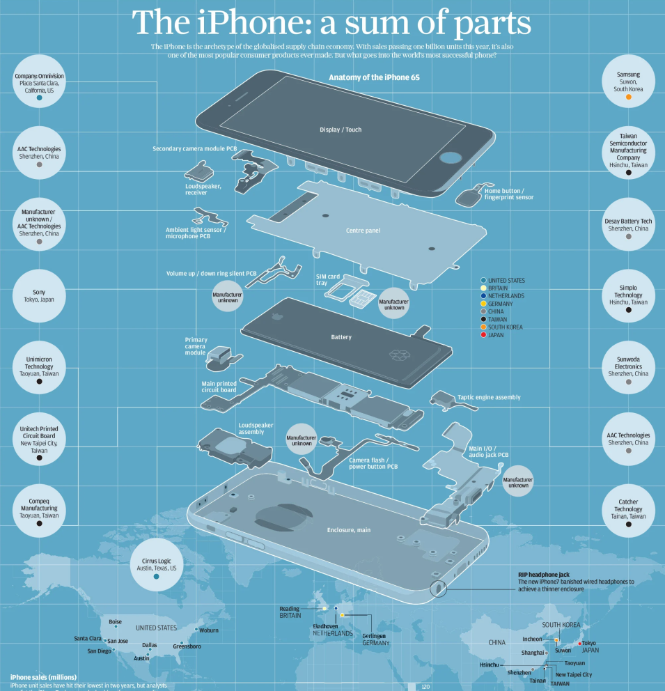
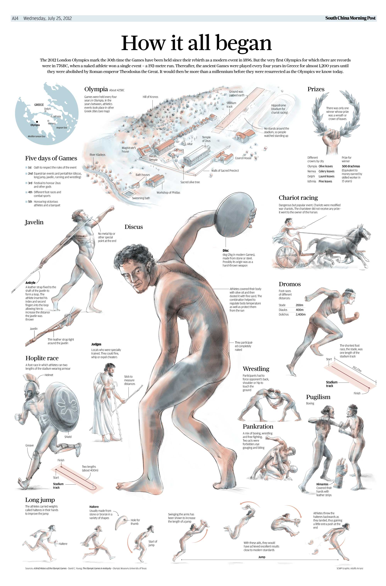
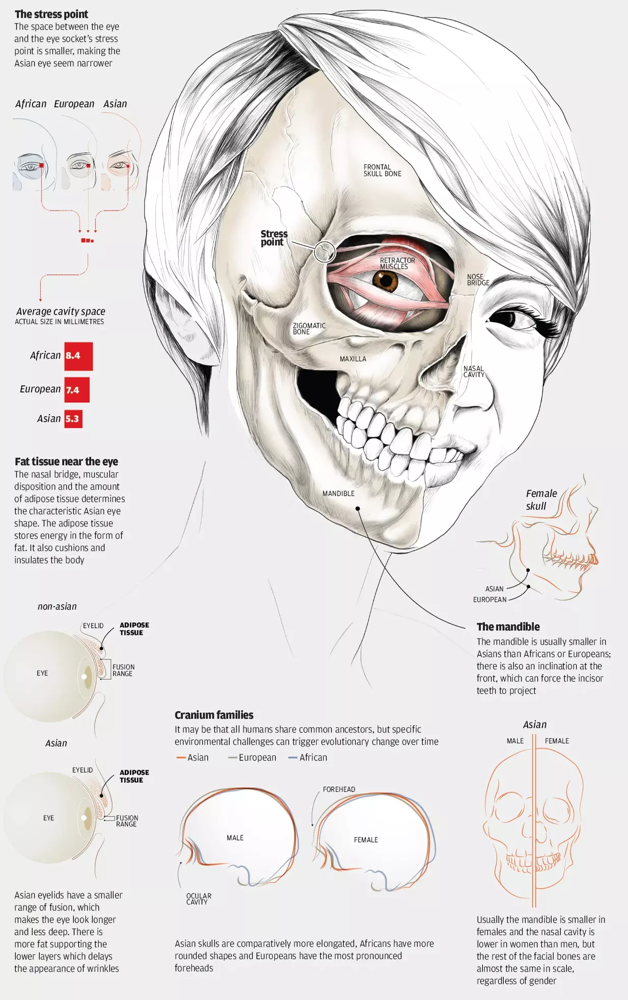
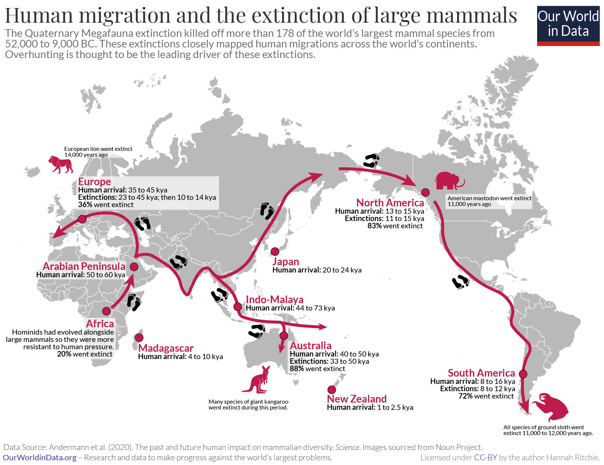

Información en gráficos figurativos

El iPhone
Publicado en South China Morning Post.

Como empezaron (las olimpiadas)
Publicado en South China Morning Post.

Como la cara Asiática obtuvo sus características
Publicado en South China Morning Post.

Migración humana y extinción de especies
Publicado por Our World in Data.